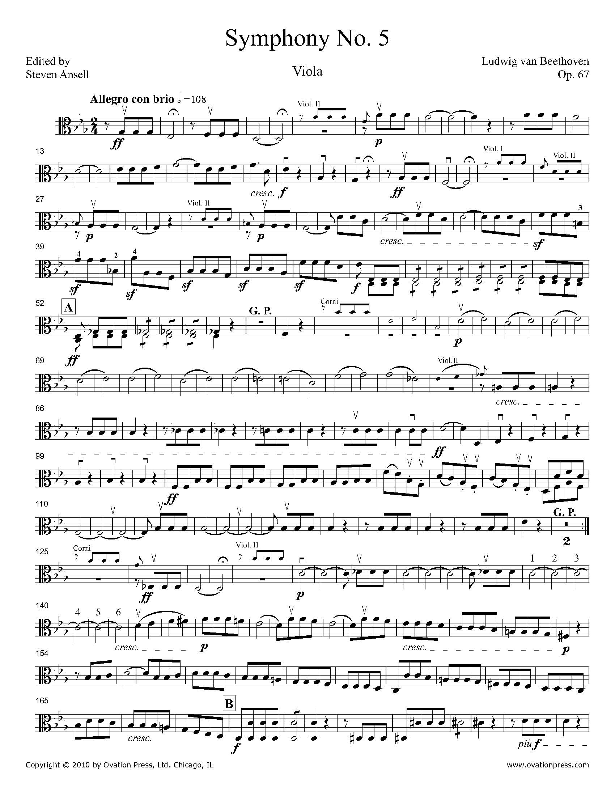

ScorEncoder, is a new visual encoding method that represents key
information encoded within a piece of classical orchestral music.
Understanding and engaging with orchestral music is time consuming and
visually demanding, and our goal was to develop a novel visualization
technique that computationally abstracts analytical information about
orchestral works. We use saturation, shape, relative positions and
lengths, and other channels to represent critical musical information.

A single page of musical notation contains information on just one
instrument for a few seconds -- imagine what this would look like for
an entire symphony piece with an orchestra of instruments!